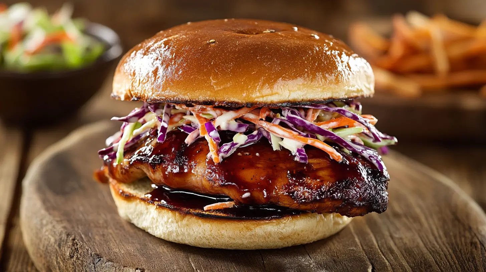

Home
Teriyaki Chicken Sandwich

This teriyaki chicken sandwich layers tender, pan-seared chicken glazed in a sweet-savory teriyaki sauce with crisp slaw and mayo on a toasted bun. Quick to make and great for weeknight dinners or packed lunches.
- 2 boneless skinless chicken breasts (or 3 thighs)
- 3 tbsp soy sauce
- 2 tbsp mirin (or rice vinegar + 1 tsp sugar)
- 2 tbsp brown sugar or honey
- 1 clove garlic, minced
- 1 tsp grated fresh ginger
- 1 tbsp vegetable oil
- 4 sandwich buns
- Mayonnaise (to taste)
- Shredded lettuce or cabbage
- Sesame seeds (optional)
- Green onions, sliced (optional)
- Make the teriyaki sauce: in a small bowl combine soy sauce, mirin, brown sugar, garlic and ginger. Stir until sugar dissolves.
- Flatten the chicken slightly for even cooking and season lightly with salt and pepper.
- Heat oil in a skillet over medium-high heat. Add chicken and cook 4–6 minutes per side until golden and cooked through.
- Pour the teriyaki sauce into the pan and simmer 2–3 minutes, spooning the glaze over the chicken, until sauce thickens and coats the chicken.
- Remove chicken and let rest 2 minutes, then slice to fit buns.
- Toast the sandwich buns lightly. Spread mayonnaise on the bottom bun, add shredded lettuce or cabbage, top with sliced teriyaki chicken and spoon any extra glaze on top.
- Garnish with sesame seeds and sliced green onions if desired. Serve hot.